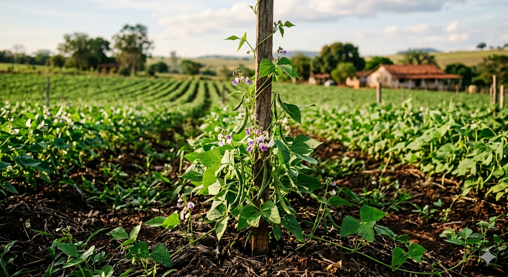
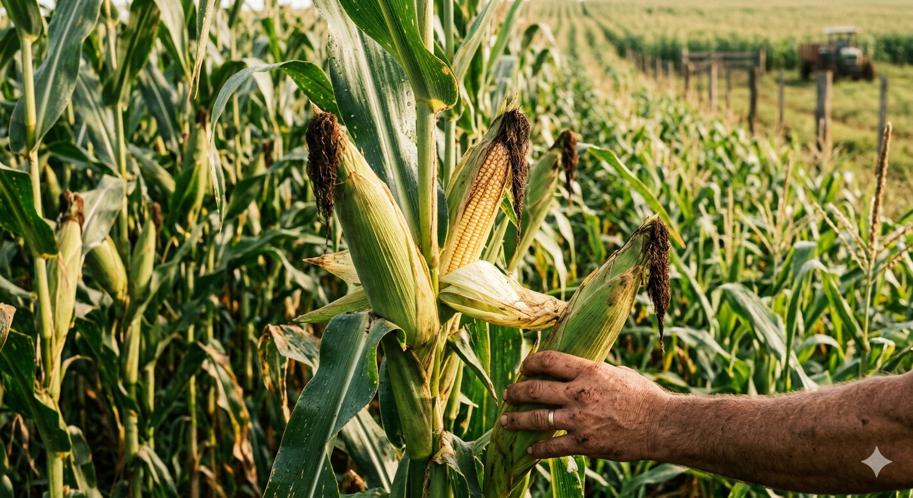
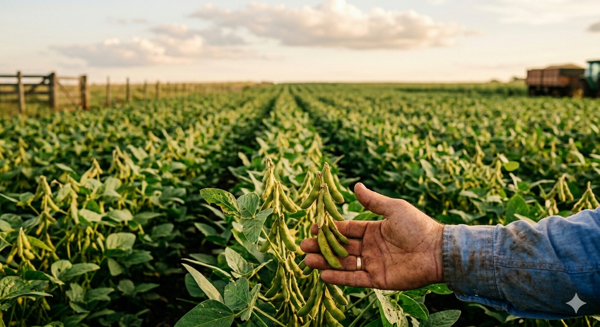

Arquivos JSON
As informações de cada cultura ficam armazenadas em arquivos separados dentro da pasta dados. O JavaScript lê esses arquivos e exibe o conteúdo na página.
Agro forte, futuro sustentável: equilíbrio entre produção e meio ambiente
Este projeto apresenta informações sobre culturas agrícolas, agricultura familiar, mercado, riscos climáticos e sustentabilidade, usando HTML, CSS, JavaScript e arquivos JSON.
O objetivo é mostrar como a tecnologia pode ajudar na organização e apresentação de dados sobre o campo, fortalecendo a relação entre produção agrícola, meio ambiente e sociedade.
Cada cultura agrícola aqui apresentada, possui uma página própria com dados organizados, imagem ilustrativa, fontes consultadas e apoio de leitura por JavaScript.
Clique em uma cultura agrícola para abrir uma página específica com informações pesquisadas, análise dos dados e fontes utilizadas.

Cultura essencial para a alimentação brasileira, com forte presença na agricultura familiar e importância para a segurança alimentar.
Ver página do feijão
Cultura versátil, usada na alimentação humana, animal, na indústria e em sistemas de rotação de culturas.
Ver página do milho
Cultura de grande importância econômica, presente no agronegócio e em debates sobre produção, mercado e sustentabilidade.
Ver página da sojaO site foi organizado para apresentar informações agrícolas de maneira simples, visual e interativa.
As informações de cada cultura ficam armazenadas em arquivos separados dentro da pasta dados. O JavaScript lê esses arquivos e exibe o conteúdo na página.
O arquivo script.js é responsável por buscar os dados, montar o conteúdo na tela e organizar as informações de forma dinâmica.
O projeto relaciona produção agrícola, agricultura familiar, riscos climáticos, mercado e equilíbrio ambiental.
As páginas das culturas apresentam as fontes utilizadas nos arquivos JSON. Entre as referências estão relatórios agrícolas, censos agropecuários e estudos técnicos.